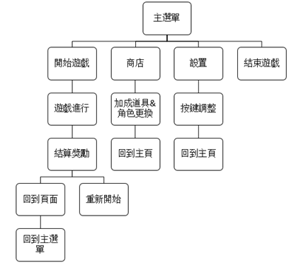
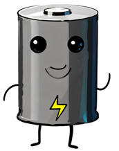
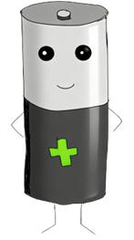
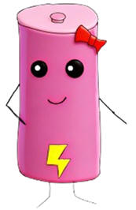
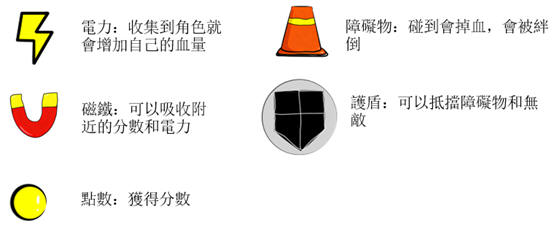
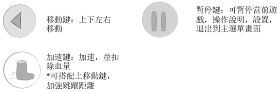
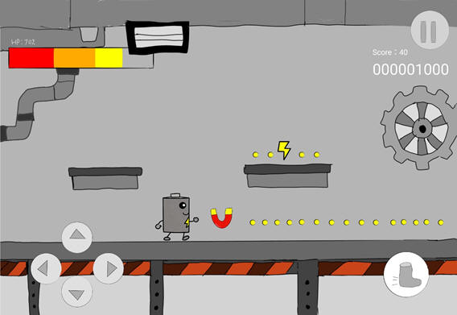
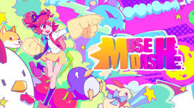

|
|
|
發想
一、製作動機
二、遊戲目的
玩家可以在遊戲中感受到不同於日常生活的感受，可以無時無刻都能玩這款遊戲，輕鬆且簡單上手。同時也增加了一些生活小知識，也順便教會大家人與科技的關係、能源的珍貴。
遊戲類型
類型：跑酷
平台：PC/手機
遊玩時間：任何時間，直到電量=血量掉光為止
目標族群：打發時間，休閒娛樂，孩童或學生
單人遊玩
在【電池工廠】裡，這些電池們產生了自我意識，想要逃離工廠。⼩電池們必須不斷收集電⼒來維持自己的電量。同時它們必須要逃離工廠。它們必須在電⼒完全耗盡前，把電力注入體內。為了⽣存，請協助他們收集電⼒維持生存並且躲避敵人的抓捕以及陷阱
操作方式
·
⼿機端：會有左右移動鍵，跳躍鍵，還有下蹲鍵，會有加速鍵
·
電腦端：wasd為移動鍵，w為跳躍，a為向左移動，s為下蹲，d為向右移動，滑鼠長按加速鍵為加速，放開則保持原速
·
撞到障礙物會扣血，拿到相應道具則會回血和增益效果
玩法介紹
玩家將操作角色，通過吃點數的方式獲得分數。玩家可以通過不同的道具獲得更高的分數，以及遊玩距離。當角色生命歸零，遊戲將結束。
流程圖

|
 |
伏安 |
||
|
 |
高德 |
||
|
 |
桃桉 |


遊戲畫面：

|
•
橫向遊戲
•
跑酷
•
收集道具
•
休閒 |
||
|
 |